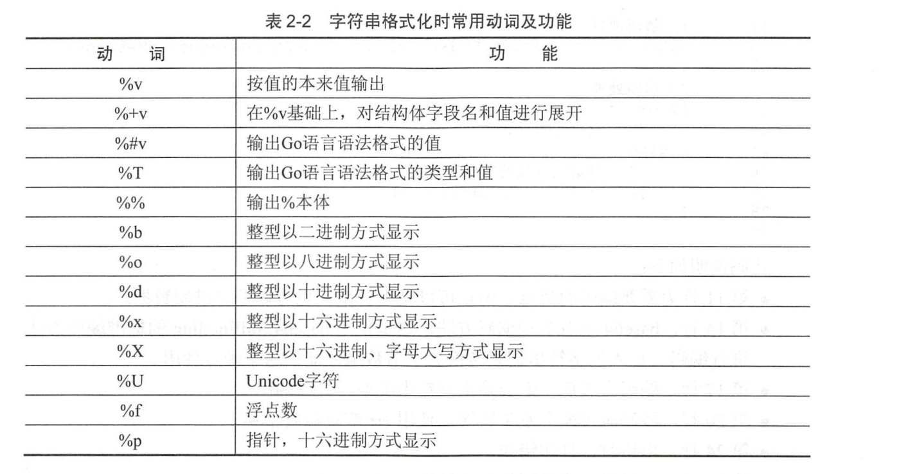

Contents
1.5. 字符串应用¶
1.5.1. 字符串拼接¶
·直接使用运算符
str := "beijing wellcom to you" + "beibei jingjing huanhuan yy nini"
fmt.Println(str)
s := "hello " + "hujianli"
s += "study golang! "
fmt.Println(s) //hello hujianlistudy golang!
· fmt.Sprintf()
ss := fmt.Sprintf("%d %s", 2020, "年")
fmt.Println(ss) //2020 年
· strings.Join()
hu :=strings.Join([]string{"hello world", "hujianli"}, ",")
fmt.Println(hu) //hello world,hujianli
·bytes.Buffer
这个比较理想，可以当成可变字符使用，对内存的增长也有优化，如果能预估字符串的长度，还可以用 buffer.Grow() 接口来设置 capacity。
var buffer bytes.Buffer
buffer.WriteString("hello")
buffer.WriteString(",")
buffer.WriteString("world")
fmt.Println(buffer.String()) //hello,world
·strings.Builder
strings.Builder 内部通过 slice 来保存和管理内容。slice 内部则是通过一个指针指向实际保存内容的数组。strings.Builder 同样也提供了 Grow() 来支持预定义容量。当我们可以预定义我们需要使用的容量时，strings.Builder 就能避免扩容而创建新的 slice 了。strings.Builder是非线程安全，性能上和 bytes.Buffer 相差无几。
var b1 strings.Builder
b1.WriteString("ABC")
b1.WriteString("DEF")
fmt.Println(b1.String()) //ABCDEF
1.5.2. 有关string的处理¶
strings 包提供了很多操作字符串的简单函数，通常一般的字符串操作需求都可以在这个包中找到。下面简单举几个例子：
判断是否以某字符串打头 strings.HasPrefix(s, prefix string) bool
判断是否以某字符串结尾 strings.HasSuffix(s, suffix string) bool
字符串分割 strings.Split(s, sep string) []string
返回子串索引 strings.Index(s, substr string) int strings.LastIndex 最后一个匹配索引
字符串连接 strings.Join(a []string, sep string) string 另外可以直接使用“+”来连接两个字符串
字符串替换 strings.Replace(s, old, new string, n int) string
字符串转化为大小写 strings.ToUpper(s string) string strings.ToLower(s string) string
统计某个字符在字符串出现的次数 strings.Count(s, substr string) int
判断字符串的包含关系 strings.Contains(s, substr string) bool
1.5.3. 计算字符串长度¶
package main
import "fmt"
func main() {
tip1 := "hujianli00001"
tip2 := "hujianli02"
tip3 :="胡建力"
fmt.Println(len(tip1)) //13
fmt.Println(len(tip2)) //10
fmt.Println(len(tip3)) //9
}
每个中文占3个字节，中文len后结果为9.如果希望按照字符串个数进行计算，就要使用Go语言中的UTF-8包提供的RuneCountInString()函数， 统计Uncode字符数量。
fmt.Println(utf8.RuneCountInString("你好")) //2
fmt.Println(utf8.RuneCountInString("你好，安河桥")) //6
1.5.4. 遍历字符串-获取每一个字符串元素¶
遍历每一个ASCII字符¶
package main
import "fmt"
func main() {
theme := "狙击 start"
for i := 0; i< len(theme); i++{
fmt.Printf("ascii: %c %d \n",theme[i],theme[i])
}
}
/*ascii: ç 231
ascii: 139
ascii: 153
ascii: å 229
ascii: 135
ascii: » 187
ascii: 32
ascii: s 115
ascii: t 116
ascii: a 97
ascii: r 114
ascii: t 116 */
1.5.5. 按Unicode字符遍历字符串¶
package main
import "fmt"
func main() {
theme := "狙击 start"
for _, s := range theme {
fmt.Printf("Unicode: %c %d\n", s, s)
}
}
/*Unicode: 狙 29401
Unicode: 击 20987
Unicode: 32
Unicode: s 115
Unicode: t 116
Unicode: a 97
Unicode: r 114
Unicode: t 116*/
获取字符串的某一段字符¶
package main
import (
"fmt"
"strings"
)
func main() {
tracer := "死神来了,死神bye bye"
comma := strings.Index(tracer, ",") // 获取索引
//fmt.Println(comma)
pos := strings.Index(tracer[comma:], "死神")
fmt.Println(comma, pos, tracer[comma+pos:])
}
/*12 1 死神bye bye*/
修改字符串¶
package main
import "fmt"
func main() {
ange1 := "Heros never die"
angeleBytes := [] byte(ange1)
for i := 5; i <= 10; i++ {
angeleBytes[i] = ' '
}
fmt.Println(string(angeleBytes))
}
/*Heros die*/
GO语言中的字符串和其他高级语言（java C#）一样，默认是不可变的。 字符串不可变的好处有很多，如天生线程安全，大家使用的都是只读对象，无须加锁； 再者，方便内存共享，而不必使用写时复制等技术，字符串的hash值也只需要制作一份。
代码中实际修改的是[]byte，[]byte在Go语言中是可变的，本身就是一个切片。 完成对[]byte操作后，在使用string()将[]byte转为字符串时，重新创建一个新的字符串。
总结：
· Go语言的字符串时不可变的
· 修改字符串时，可以将字符串转换为[]byte进行修改
· []byte和string可以通过强制类型转换互转。
连接字符串¶
package main
import (
"bytes"
"fmt"
)
func main() {
hammer := "吃我一锤"
sickle := "去死吧"
// 声明字节缓冲
var stringBuilder bytes.Buffer
// 把字符串写入缓冲
stringBuilder.WriteString(hammer)
stringBuilder.WriteString(sickle)
// 将缓冲以字符串形式输出
fmt.Println(stringBuilder.String())
}
//吃我一锤去死吧
格式化¶
格式化在逻辑中非常常用，使用格式化函数，要注意写法：
fmt.Sprintf(格式化样式，参数列表)
· 格式化样式： 字符串形式，格式化动词以%开头。 · 参数列表：多个参数以逗号分隔，个数必须与格式化样式中的个数一一对应，否则运行时会报错。
package main
import "fmt"
func main() {
var progress = 2
var target = 8
title := fmt.Sprintf("已采集%d个草药，还需要%d个完成任务", progress, target)
fmt.Println(title)
pi := 3.14159
// 按照数值本身的格式输出
variant := fmt.Sprintf("%v %v %v", "月球基地", pi, true)
fmt.Println(variant)
// 匿名结果图声明，并赋予初值
profile := &struct {
Name string
HP int
}{
Name: "rat",
HP: 150,
}
fmt.Printf("使用‘%%+v’ %+v\n", profile)
fmt.Printf("使用‘%%#v’ %#v\n", profile)
fmt.Printf("使用‘%%T’ %T\n", profile)
}
/*已采集2个草药，还需要8个完成任务
月球基地 3.14159 true
使用‘%+v’ &{Name:rat HP:150}
使用‘%#v’ &struct { Name string; HP int }{Name:"rat", HP:150}
使用‘%T’ *struct { Name string; HP int }*/

Base64解码-电子邮件的基础解码格式¶
package main
import (
"encoding/base64"
"fmt"
)
func main() {
// 需要处理的字符串
mesage := "Away from keyboard. https://goolang.org"
// 编码消息
encodeMessage := base64.StdEncoding.EncodeToString([]byte(mesage))
fmt.Println(encodeMessage) // 输出编码完成的消息
//QXdheSBmcm9tIGtleWJvYXJkLiBodHRwczovL2dvb2xhbmcub3Jn
//解码消息
data, err := base64.StdEncoding.DecodeString(encodeMessage)
//出错处理
if err != nil {
fmt.Println(err)
} else {
// 打印解码完成的数据
fmt.Println(string(data)) //Away from keyboard. https://goolang.org
}
}
从INI配置文件中查询需要的值¶
example.ini
[core]
repositoryformatversion = 0
filemode = false
bare = false
logallrefupdates = true
symlinks = false
ignorecase = true
hideDotFiles = dotGitOnly
[remote "origin"]
url = https://github.com/davyxu/cellnet
fetch = +refs/heads/*:refs/remotes/origin/*
[branch "master"]
remote = origin
merge = refs/heads/master
从INI文件中取值的函数¶
package main
import (
"bufio"
"fmt"
"os"
"strings"
)
//根据文件名，段名，键名获取ini的值
func getValue(filename, expectSection, expectKey string) string {
// 打开文件
file, err := os.Open(filename)
// 文件找不到返回空
if err != nil {
return ""
}
// 在函数结束时，关闭文件
defer file.Close()
// 使用读取器读取文件
reader := bufio.NewReader(file)
// 当前读取的段的名字
var sectionName string
for {
// 读取文件的一行
linestr, err := reader.ReadString('\n')
if err != nil {
break
}
// 切掉行的左右两边的空白字符
linestr = strings.TrimSpace(linestr)
// 忽略空行
if linestr == "" {
continue
}
// 忽略注释
if linestr[0] == ':' {
continue
}
// 行首和行尾分别是方括号的，说明是段标记的起止符
if linestr[0] == '[' && linestr[len(linestr)-1] == ']' {
// 将段名取出
sectionName = linestr[1 : len(linestr)-1]
// 这个段是希望读取的
} else if sectionName == expectSection {
//切开等号分割的键值对
pair := strings.Split(linestr, "=")
// 保证切开只有1个等号分割的简直情况
if len(pair) == 2 {
// 去掉键的多余空白字符
key := strings.TrimSpace(pair[0])
// 是期望的值
if key == expectKey {
// 返回去掉空白字符的值
return strings.TrimSpace(pair[1])
}
}
}
}
return ""
}
func main() {
fmt.Println(getValue("example.ini", "remote \"origin\"", "fetch"))
fmt.Println(getValue("example.ini", "core", "hideDotFiles"))
}
函数使用说明：
getValue() 函数的声明如下：
func getValue(filename, expectSection, expectKey string) string
参数说明如下。
· filename：INI 文件的文件名。
· expectSection：期望读取的段。
· expectKey：期望读取段中的键。